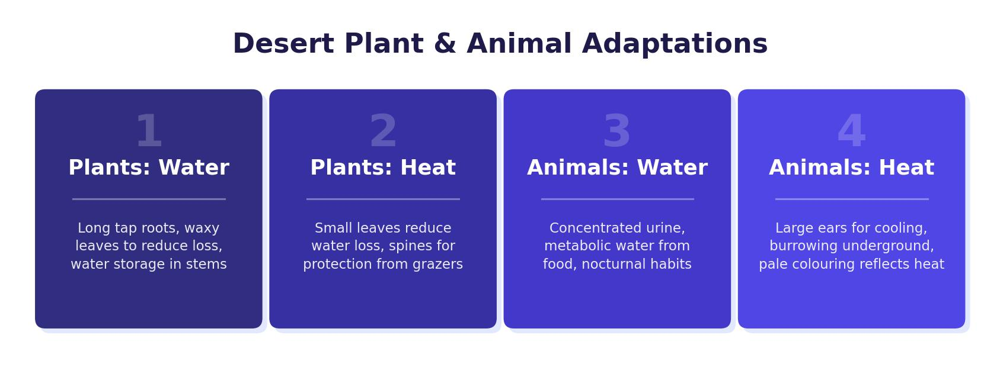

Distribution of Hot Deserts
Hot deserts are found in subtropical areas, typically between 20° and 30° north and south of the equator. They are located on every continent except Europe. Major hot deserts include the Sahara (Africa), the Arabian Desert (Middle East), the Thar Desert (India/Pakistan), the Sonoran Desert (North America) and the Great Sandy Desert (Australia).
Why Are Deserts So Dry?
Deserts are located in the high-pressure belt of the Hadley Cell. Warm air rises at the equator, loses its moisture as heavy rainfall over tropical rainforests, and then descends as dry, cool air at around 30° latitude. Because the air is descending and not rising, few clouds form and there is very little rainfall. The lack of cloud cover also explains the extreme temperature range — intense sunshine during the day but rapid heat loss at night.
Hot deserts receive less than 250 mm of rainfall per year. Daytime temperatures can exceed 45°C, but at night they can drop below 10°C. This large diurnal temperature range is caused by the lack of cloud cover, which allows heat to escape rapidly after sunset.

Characteristics of Hot Deserts
Hot deserts have distinctive physical characteristics:
- Climate — extremely hot during the day, cold at night, with very low and unreliable rainfall (under 250 mm per year).
- Landscape — stony and sandy surfaces. Only about 25% of desert landscapes are sand dunes; most are rocky or gravelly plains.
- Vegetation — sparse, with plants widely spaced to reduce competition for water.
- Biodiversity — low compared to other biomes, because the extreme conditions make survival very difficult.
Desert Soil
Desert soil is very different from the brown earth of deciduous woodlands or the latosol of tropical rainforests. Rainfall is too low for effective decomposition by bacteria (which need water), so very little humus develops. The soil is dry, sandy and loose, with very few nutrients. This poor soil, combined with the extreme heat and lack of water, limits plant growth and keeps biodiversity low.
Plant Adaptations
Desert plants have developed remarkable adaptations to survive with minimal water and extreme heat:
The Cactus
- Spines instead of leaves — spines have a tiny surface area, which drastically reduces water loss compared to broad leaves. They also help catch condensation and protect the plant from animals seeking water.
- Fleshy stems — store large amounts of water. The cactus swells quickly when water is available.
- Thick, waxy skin — creates a waterproof coating that reduces water loss through evaporation.
- Long and shallow roots — a mix of deep roots to access underground water sources and shallow, widespread roots to catch rain near the surface.
The Quiver Tree
- Self-amputation — the quiver tree can cut off its own branches and seal the wound to reduce water loss during severe drought.
- Smooth, impermeable bark — prevents water from escaping through the trunk.
- White powder coating — reflects the heat of the sun, keeping the tree cool.
- Thick-skinned leaves — leaves have a thick rind and very few pores, minimising water loss.
- Spongy tissue — a bloated, spongy core stores water inside the trunk.
In exam questions about plant adaptations, you will often need to discuss the figure (usually a cactus photograph) and then add your own knowledge of a second plant (the quiver tree is an excellent choice). Always explain how the adaptation helps the plant survive — for example, “spines reduce surface area, which minimises water loss through evaporation.”
Animal Adaptations
Desert animals have also developed clever adaptations to cope with extreme heat, lack of water and limited food:
- Humps — store fat (not water!), which can be broken down into energy and water when food is scarce.
- Rarely sweats — conserves water for long periods even in extreme heat.
- Large, tough lips — can pick at dry and thorny desert vegetation without injury.
- Broad, flat feet — spread the camel’s weight to stop it sinking into sandy soil. Leathery soles protect against the hot sand.
- Slit-like nostrils and two rows of eyelashes — protect against windblown sand.
- Large, bat-like ears — radiate body heat, helping the fox stay cool in the desert heat.
- Thick fur on feet — protects against the hot ground when walking on sand.
- Long, thick hair — insulates the fox during cold nights and protects from the hot sun during the day.
- Light-coloured fur — reflects sunlight and keeps the body cool.
- Nocturnal behaviour — the fennec fox is active at night, avoiding the worst of the daytime heat.
A common exam mistake is saying that camel humps contain water. They contain fat, which can be broken down into water and energy when needed. Always be precise about adaptations and link them to the specific desert challenge they address (heat, water scarcity, or sandy terrain).